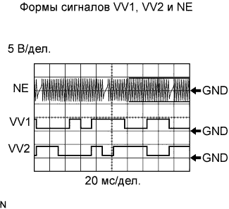
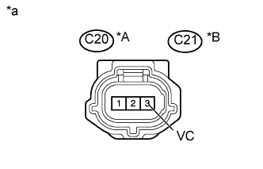
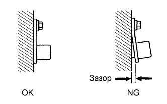
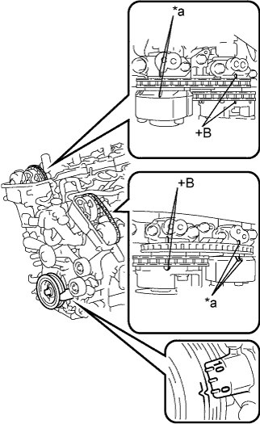

DTC P0340 Неисправность цепи датчика положения распредвала |
DTC P0342 Низкий уровень сигнала на входе цепи датчика положения распредвала "A" (ряд 1 или отдельный датчик) |
DTC P0343 Высокий уровень сигнала на входе цепи датчика положения распредвала "A" (ряд 1 или отдельный датчик) |
DTC P0345 Датчик положения распредвала "A" (ряд 2) |
DTC P0347 Низкий уровень сигнала на входе цепи датчика положения распредвала "А" (ряд 2) |
DTC P0348 Высокий уровень сигнала на входе цепи датчика положения распредвала "А" (ряд 2) |
| № DTC | Условие обнаружения DTC | Неисправный участок |
| P0340 P0345 | Выполняется любое из следующих условий:
|
|
| P0342 P0347 | Выходное напряжение датчика положения распредвала составляет менее 0,3 В в течение 4 с (логика диагностирования за 1 поездку). | |
| P0343 P0348 | Выходное напряжение датчика положения распредвала составляет более 4,7 В в течение 4 с (логика диагностирования за 1 поездку). |
|  |
| Параметр / Устройство | Описание |
| Контакт | NE+ - NE- VV1+ - VV1- VV2+ - VV2- |
| Настройка оборудования | 5 В/дел. 20 мс/дел. |
| Условие | Прокручивание коленчатого вала стартером или работа двигателя на холостом ходу |
| 1.ПРОВЕРЬТЕ ДАТЧИК ПОЛОЖЕНИЯ РАСПРЕДВАЛА (ИСТОЧНИК ПИТАНИЯ ДАТЧИКА) |
|  |
Отсоедините разъем датчика положения распредвала.
Измерьте напряжение в соответствии со значениями, приведенными в таблице.
| Контакты для подключения диагностического прибора | Условие | Заданные условия |
| C20-3 (VC) - масса | Всегда | 4,5-5,0 В |
| C21-3 (VC) - масса | Всегда | 4,5-5,0 В |
| *A | Ряд 1 |
| *B | Ряд 2 |
| *a | Вид спереди разъема со стороны жгута проводов: (к датчику положения распредвала) |
Вновь подсоедините разъем датчика положения распредвала.
|
| ||||
| OK | |
| 2.ПРОВЕРЬТЕ ЖГУТ И РАЗЪЕМ (ДАТЧИК СИСТЕМЫ VVT - ECM) |
Отсоедините разъем датчика положения распредвала.
Отсоедините разъем ЭБУ.
Измерьте сопротивление в соответствии со значениями, приведенными в таблице ниже.
| Контакты для подключения диагностического прибора | Условие | Заданные условия |
| C20-1 (VVR+) - C34-9 (VV1+) | Всегда | Менее 1 Ом |
| C20-2 (VVR-) - C34-10 (VV1-) | Всегда | Менее 1 Ом |
| C21-1 (VVL+) - C34-12 (VV2+) | Всегда | Менее 1 Ом |
| C21-2 (VVL-) - C34-11 (VV2-) | Всегда | Менее 1 Ом |
| Контакты для подключения диагностического прибора | Условие | Заданные условия |
| C20-1 (VVR+) или C34-9 (VV1+) - масса | Всегда | 10 кОм или более |
| C20-2 (VVR-) или C34-10 (VV1-) - масса | Всегда | 10 кОм или более |
| C21-1 (VVL+) или C34-12 (VV2+) - масса | Всегда | 10 кОм или более |
| C21-2 (VVL-) или C34-11 (VV2-) - масса | Всегда | 10 кОм или более |
Вновь подсоедините разъем датчика положения распредвала.
Подсоедините разъем ECM.
|
| ||||
| OK | |
| 3.ПРОВЕРЬТЕ МОНТАЖ ДАТЧИКА |
|  |
Проверьте установку датчика положения распредвала.
|
| ||||
| OK | |
| 4.ПРОВЕРЬТЕ ФАЗЫ ГАЗОРАСПРЕДЕЛЕНИЯ |
|  |
Снимите крышки правой и левой головок блока цилиндров в сборе.
Поверните коленчатый вал, чтобы совместить метки.
Совместите метку шкива коленчатого вала с положением "0".
Убедитесь, что метки на шкиве распредвала и крышке подшипника распредвала были совмещены.
| *a | Установочная метка |
Если метки не совмещены, поверните коленчатый вал по часовой стрелке на 360°. Еще раз убедитесь, что они совмещены.
Установите на место крышки правой и левой головок блока цилиндров в сборе.
|
| ||||
| OK | |
| 5.ПРОВЕРЬТЕ ЗУБЧАТОЕ КОЛЕСО РАСПРЕДВАЛА В СБОРЕ (ЗУБЦЫ ДИСКА) |
Проверьте зубцы зубчатого диска.
|
| ||||
| OK | |
| 6.ЗАМЕНИТЕ ДАТЧИК VVT |
Замените датчик положения распредвала (Нажмите здесь).
| ДАЛЕЕ | |
| 7.ПРОВЕРЬТЕ, ВЫВОДИТСЯ ЛИ КОД DTC СНОВА |
Подсоедините портативный диагностический прибор к DLC3.
Включите зажигание (IG).
Включите портативный диагностический прибор.
Сбросьте коды DTC (Нажмите здесь).
Запустите двигатель.
Войдите в следующие меню: Powertrain / Engine and ECT / DTC.
Считайте коды DTC.
| Результат | Следующий шаг |
| Коды не выводятся | А |
| P0340, P0342, P0343, P0345, P0347 или P0348 | B |
|
| ||||
| А | ||
| ||